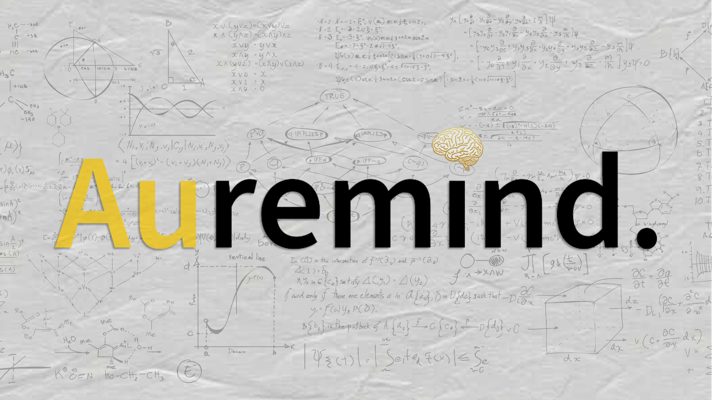

Projects & experiments
Things I've built — from side projects to academic work.

Web App · 2026
Badan Gizi Nasional - SPPG Carto
End-to-end geospatial data pipeline and visualization system for mapping, enriching, and analyzing 26,000+ SPPG locations across Indonesia.

Bot / Automation · 2025
Tuschology-IDX-Bot
Real-time IDX announcement & Indonesian Market News Bot with priority alerts, structured scraping, Discord topic-based routing, Telegram broadcast, and dynamic market-aware presence system.

Embedded / IoT · 2026
Adhan Caller
Python-based Adhan automation service that fetches daily prayer times, schedules reminders, supports offline caching, and runs reliably as a systemd service on Linux servers.

College Project · 2025
AureMind
An AI-assisted personal management web app built with Django, combining note-taking, task management, and productivity tools within a clean, responsive interface.